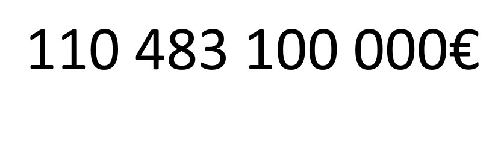

Publié le 8 juin 2025
Vers une 3ème guerre mondiale ?
La guerre en Ukraine peut elle s'agraver au niveau mondiale ?
Rappel
La guerre en Ukraine à bien débuter en 2014, le 24 février. Contrairement à l'idée de beaucoup de gens, la guerre n'as pas commencé en février 2022 (début de la haute invasion de l'armée russe ). Chef d'état de l'Ukraine : Volodymyr Zelensky. Chef d'état de la Russie : Vladimir Poutine
Sommaire
Quelles sont réellement les ambitions de Vladimir Poutine ?
Quelles sont réellements les ambitions de Vladimir Poutine ?
Une guerre à beau être violente et sûrement meurtrière, ce n'est pas pour ça que la Terre entière vas s'y mêler : il faut une raison à l'échelle internationale !
L'une des plus grandes hypothèses que toutes personnes pensent est sûrement celle de la résurection de l'URSS. Mais les chances que cela arrive sont pas très élevés. Les Etats-Unis, l'Europe et n'auront aucun mal à empécher cette situation d'arrivée un jour même si le Russie bénéficier d'une aide économique de la Chine. Le but de départ de Vladimir Poutine était de mettre l'Ukraine sous l'influence de la Russie.
Le point de vue économique
Dans une guerre tout ne se résume pas à la puissance militarriste d'un pays mais aussi le point de vue économique. Un avantage éconimique permet de fournir des armes, des munitions, des soldats, de la nourriture mais aussi survivre tout seul sans commercer avec les autres nations.
Vladimir Poutine prévoit un budget colossale de 126 milliard de dollards dans les armées soit
C'est aussi un tier de plus des dépenses publiques de la Russie !
Comme on le voit si dessus, la Russie n'a aucun problème sur pour sortir de l'argent dans ses armées mais quand est-il de sa survie dans le commerce ? Les 20 000 sactions imposés par l'Union Européenne et les Etats-Unis ont obligés la Russie a changé de de client. En effet les revenus pétroliers et gaziers russes ont baissés de 24% en 2023 et une nouvelle baisse de 10% en 2024 ce qui a forcé la Russie a se tourner vers la Chine et L'Inde. Les détours navales pour atteindre l'Inde ont élevé le prix de l'exportation du pétrole. La croissance économique de la russie a peut être décélérée mais elle a aussi renforcer l'alliance entre la Chine et la Russie.
Conclusion
Vladimir Poutine peut toujours déclencher une guerre mondiale mais il n'y a aucun aventage pour lui : même avec l'alliance de la Chine la Russie ne gagnera pas économiquement et aussi elle a beau avoir la deuxième plus grande armée au monde, ça n'empêchera pas l'Europe et les Etats-Unis de gagner la guerre.